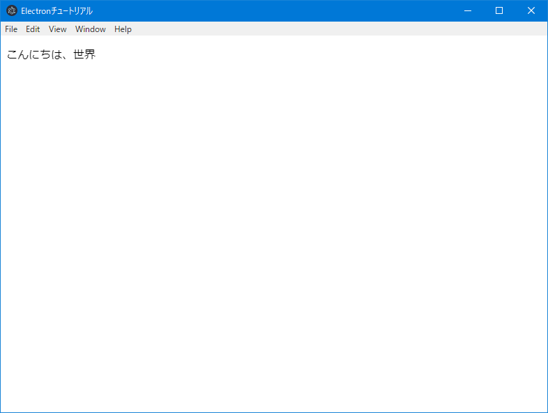

前回は、npm プロジェクトと主要なライブラリのインストールを行いました。
今回は、各ツールの定義ファイルの作成と、Electronアプリの最小限の構成で、一応動作するところまで作ります。
TypeScriptのコンパイル・オプションは多数あるので、コンパイル・コマンドで引数を指定するよりも、ファイルで定義したほうが効率的です。
ファイル名は、tsconfig.jsonとします。
ファイルを一から作ることもできますが、下記コマンドで作成することもでき、オプションがコメントで全て記述されているので、オプションの on/off が楽です。
通常JSONファイルはコメントの記述はできないのですが、このJSONファイルは特別なルールが適用されるようです。
$ ./node_modules/.bin/tsc --init
いくつかのコメントアウトを外し、下記になるようにしてください。
また、"include"属性も追加します。これは、コンパイル対象のファイルを指定するものです。
{
"compilerOptions": {
"target": "es6",
"module": "commonjs",
"jsx": "react",
"outDir": "./dist",
"strict": true,
"esModuleInterop": true,
"sourceRoot": "./tsx",
"inlineSourceMap": true,
"inlineSources": true
},
"include": [
"./ts/**/*"
]
}
パスのワイルドカードについて
/**/サブディレクトリを再帰的にマッチ*0個以上の文字列にマッチ?1個の文字列にマッチ
tslint は設定したコーディング・ルールに従って、コンパイラが行う構文チェックより厳しいチェックを行います。
例えば、
などがあります。
ルール
公式: TSLint core rules
非公式(日本語): TSLint v5.7.0 で指定できる全 rules をまとめた - Corredor
下記コマンドで、推奨設定での tslint 設定ファイルtslint.jsonが作成されます。
$ ./node_modules/.bin/tslint.cmd --init
ここでは推奨設定に加えて、文字列リテラルには、シングルクォーテーションを使用するが、JSXの属性ではダブルクォーテーションとする、というルールを適用することとします。
推奨設定の内容: tslint/recommended.ts at master · palantir/tslint
推奨設定は、airbnb という企業が設計し、オープンソースとして公開しているルールとなっている Javascript-style-guide
結構厳し目ですが、特に問題ない限りこれに従うと良いです。
tslint.json
{
"defaultSeverity": "error",
"extends": [
"tslint:recommended"
],
"jsRules": {},
"rules": {
"quotemark": [true, "single", "jsx-double"]
},
"rulesDirectory": []
}
webpack の動作設定を行います。webpack.config.jsの名前で空ファイルを作成し、下記内容を記述します。
const path = require('path');
module.exports = {
const path = require('path');
module.exports = {
// node.js で動作することを指定する
target: 'node',
// 起点となるファイル
entry: './ts/index.tsx',
// webpack watch したときに差分ビルドができる
cache: true,
// development は、 source map file を作成、再ビルド時間の短縮などの設定となる
// production は、コードの圧縮やモジュールの最適化が行われる設定となる
mode: 'development', // "production" | "development" | "none"
// ソースマップのタイプ
devtool: 'source-map',
// 出力先設定 __dirname は node でのカレントディレクトリのパスが格納される変数
output: {
path: path.join(__dirname, 'dist'),
filename: 'index.js'
},
// ファイルタイプ毎の処理を記述する
module: {
rules: [{
// 正規表現で指定する
// 拡張子 .ts または .tsx の場合
test: /\.tsx?$/,
// ローダーの指定
// TypeScript をコンパイルする
use: 'ts-loader'
}, {
// 拡張子 .ts または .tsx の場合
test: /\.tsx?$/,
// 事前処理
enforce: 'pre',
// TypeScript をコードチェックする
loader: 'tslint-loader',
// 定義ファイル
options: {
configFile: './tslint.json',
// airbnb というJavaScriptスタイルガイドに従うには下記が必要
typeCheck: true,
},
}],
},
// 処理対象のファイルを記載する
resolve: {
extensions: [
'.ts',
'.tsx',
'.js', // node_modulesのライブラリ読み込みに必要
]
},
};
UIとなるHTMLファイルを作成します。
Reactでは、ほとんどの要素を動的に生成するので、HTMLファイルは非常に簡単なものになります。
ファイル名をindex.htmlとします。
index.html
<!DOCTYPE html>
<html lang="en">
<head>
<meta charset="UTF-8">
<meta name="viewport" content="width=device-width, initial-scale=1.0">
<title>Electronチュートリアル</title>
</head>
<body>
<div id="contents"></div>
<script src="dist/index.js"></script>
</body>
</html>
Electronは、1つの main プロセスと 1つ以上の render プロセスの2種類のプロセスで動作します。
main プロセスは、Electron 自体と render プロセスの管理を行うものです。Electronアプリを起動したときには、まず main プロセスが動作し、その中で render プロセスを起動する仕組みとなっています。
render プロセスは、ブラウザエンジンを持っていて、ブラウザアプリの動作を担当します。
main.js にはメインプロセスのプログラムを書きます。
これも TypeScript で書いて webpack で JavaScript に変換することもできますが、今回はコード量がそれほど多くはないので、JavaScript で書きます。
main.js
const {
app,
BrowserWindow
} = require('electron')
// レンダープロセスとなるブラウザ・ウィンドウのオブジェクト。
// オブジェクトが破棄されると、プロセスも終了するので、グローバルオブジェクトとする。
let win
function createWindow() {
// ブラウザウィンドウの作成
win = new BrowserWindow({
width: 800,
height: 600
})
// index.html をロードする
win.loadFile('index.html')
// 起動オプションに、 "--debug"があれば開発者ツールを起動する
if (process.argv.find((arg) => arg === '--debug')) {
win.webContents.openDevTools()
}
// ブラウザウィンドウを閉じたときのイベントハンドラ
win.on('closed', () => {
// 閉じたウィンドウオブジェクトにはアクセスできない
win = null
})
}
// このメソッドは、Electronが初期化を終了し、
// ブラウザウィンドウを作成する準備ができたら呼び出される。
// 一部のAPIは、このイベントが発生した後にのみ使用できる。
app.on('ready', createWindow)
// 全てのウィンドウオブジェクトが閉じたときのイベントハンドラ
app.on('window-all-closed', () => {
// macOSでは、アプリケーションとそのメニューバーがCmd + Qで
// 明示的に終了するまでアクティブになるのが一般的なため、
// メインプロセスは終了させない
if (process.platform !== 'darwin') {
app.quit()
}
});
app.on('activate', () => {
// MacOSでは、ドックアイコンがクリックされ、
// 他のウィンドウが開いていないときに、アプリケーションでウィンドウを
// 再作成するのが一般的です。
if (win === null) {
createWindow()
}
});
webpack でコンパイルができるか、確認します。
そのために、TypeScript のファイルindex.tsxを１つ作成します。
import React from 'react';
import ReactDom from 'react-dom';
const container = document.getElementById('contents');
ReactDom.render(
<p>こんにちは、世界</p>,
container,
);
コード中にいきなり文字列でもなくHTMLタグがありますが、これは JSX 記法と言われるもので、DOM Elementオブジェクト（正確には、DOM Element をラッピングした React.HTMLElement オブジェクト ）を作成するものです。
TypeScript でこれを利用するためには、tsconfig.jsonで"jsx": "react"(Reactを利用する場合)とし、ソースのファイルの拡張子を.tsxとする必要があります。
また、当然この記法は JavaScript としてブラウザが認識してくれないので、JavaScript に変換する必要がありますが、TypeScript コンパイラにはその機能もあるので、別途ツールを用意するなどの必要はありません。
## コンパイルの確認
下記コマンドを実行して、コンパイルを実行します。
$ ./node_modules/.bin/webpack
dist ディレクトリが作成されその中に、index.jsとindex.js.mapができていれば成功です。
Electron を起動して確認してみましょう。
$ ./node_modules/.bin/electron ./
”こんにちは、世界”が出てきたら成功です。

いちいち./node_modules/.binとか打つのが面倒なので、npm script に書きます。
{
"scripts": {
"build": "webpack",
"start": "electron ./"
},
}
npm script は下記のように実行します。
$ npm run build
npm script は、"コマンド名": "シェルコマンド"というように書きますが、node_modules/.binにはパスが通った状態で実行するので、それを打たなくても良いです。
また、下記コマンドは規定のコマンド名なので、run が必要ないです。
$ npm start
コンパイルの環境が整いましたので、次回は、React-Redux を使ったフレームワークのコードを書いていきます。